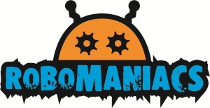
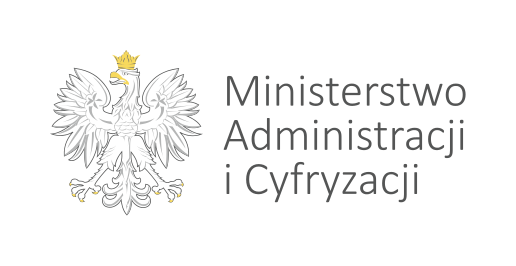

Inicjatywa pod honorowym patronatem Ministra Administracji i Cyfryzacji Rafała Trzaskowskiego

To wydarzenia nie mogło by się odbyć bez drobnego wsparcia poniższych firm. Wielkie dziękujemy!
Zostań naszym sponsorem!
Przygotowanie takiego wydarzenia, to nie tylko nasza praca, ale pomoc też wielu zaprzyjaźnionych inicjatyw